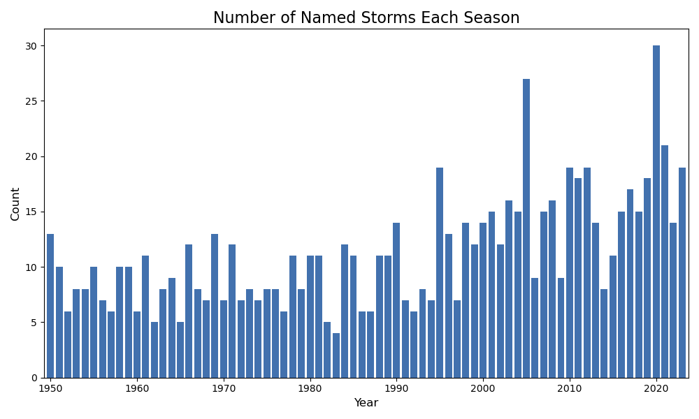
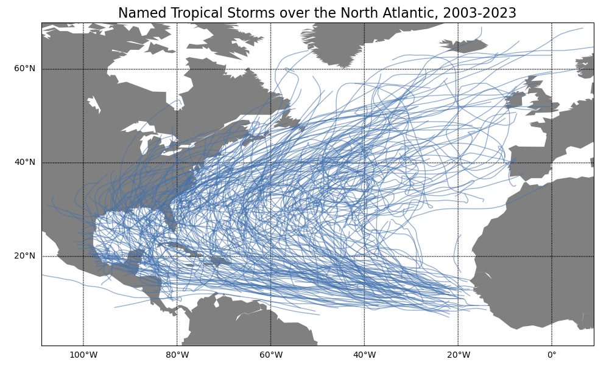
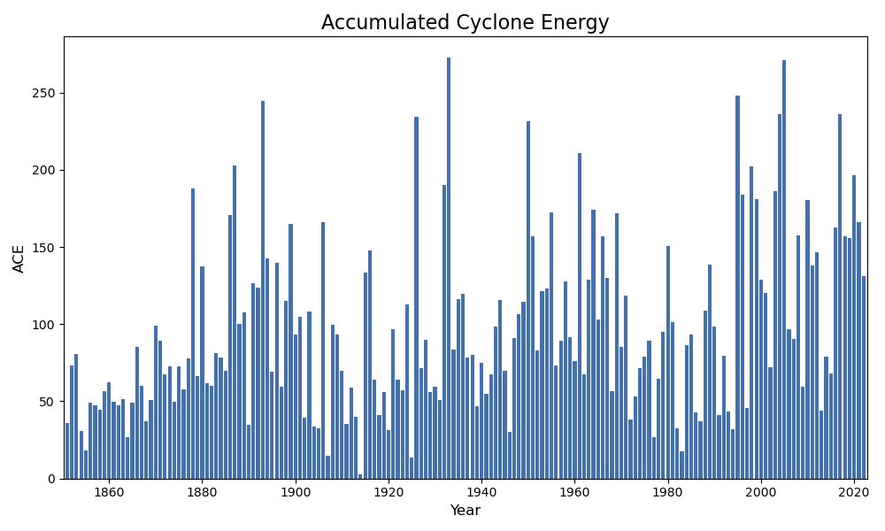

¶IBTrACS Data
The IBTrACS, or International Best Track Archive for Climate Stewardship (IBTrACS) data contains a history of tropical storm data. It is stored by NOAA’s National Climatic Data Center (NCDC). Let’s load the data and explore it in Python.
¶Import Modules
Let’s start by importing the modules we need.
# Import modules from urllib import request import os import pandas as pd import numpy as np import matplotlib.pyplot as plt from mpl_toolkits.basemap import Basemap
¶Download the Data
Now we need to download the IBTrACS data. It isn’t very large, so it shouldn’t take too long.
# Set the basin to download basin = 'NA' # Set the URL url = 'https://www.ncei.noaa.gov/data/' url += 'international-best-track-archive-for-climate-stewardship-ibtracs/' url += 'v04r00/access/csv/ibtracs.'+basin+'.list.v04r00.csv' # Set the file path filePath = '../data/ibtracs.'+basin+'.nc' # Download the file if it doesn't already exists if not os.path.exists(filePath): request.urlretrieve(url,filePath)
¶Explore the Data
There are a lot of variables here, but we will only need a handful. Some of the pertinent variables and their descriptions are provided below (from the IBTrACS documentation):
| Variable Name | Description |
|---|---|
numobs |
the number of observations for each storm |
sid |
a unique storm identifier (SID) assigned by IBTrACS algorithm |
season |
year the storm began |
number |
number of the storm for the year (restarts at 1 for each year) |
basin |
basin of the current storm position |
subbasin |
sub-basin of the current storm position |
name |
name of system give by source (if available) |
iso_time |
time of the observation in ISO format (YYYY-MM-DD hh:mm:ss) |
nature |
type of storm (a combination of the various types from the available sources) |
lat |
mean position - latitude (a combination of the available positions) |
lon |
mean position - longitude (a combination of the available positions) |
wmo_wind |
maximum sustained wind speed assigned by the responsible WMO agency |
wmo_pres |
minimum central pressure assigned by the responsible WMO agnecy |
track_type |
track type (main or spur). |
dist2land |
current distance to land from current position |
landfall |
minimum distance to land over next 3 hours (=0 means landfall) |
iflag |
a flag identifying the type of interpolation used to fill the value at the given time |
storm_speed |
storm translation speed (knots) |
storm_dir |
storm translation direction (in degrees east of north) |
We won’t necessarily keep all of these, but it’s good to know what these are. Now let’s read in the data and have a look at the last few values.
# Read the data from the CSV df = pd.read_csv(filePath,low_memory=False,skiprows=range(1,2)) # Only keep a handful of columns keepColumns = ['SID','SEASON','NUMBER','NAME','ISO_TIME', 'NATURE','LAT','LON','WMO_WIND','WMO_PRES','TRACK_TYPE', 'DIST2LAND','LANDFALL','IFLAG','STORM_SPEED','STORM_DIR'] df = df[keepColumns] # Convert time strings to datetimes for better querying df['ISO_TIME'] = pd.to_datetime(df['ISO_TIME']) df['SEASON'] = pd.to_numeric(df['SEASON']) df['NUMBER'] = pd.to_numeric(df['NUMBER']) df['LAT'] = pd.to_numeric(df['LAT']) df['LON'] = pd.to_numeric(df['LON']) # Show the last few records df.tail()
| SID | SEASON | NUMBER | NAME | ISO_TIME | NATURE | LAT | LON | WMO_WIND | WMO_PRES | TRACK_TYPE | DIST2LAND | LANDFALL | IFLAG | STORM_SPEED | STORM_DIR | |
|---|---|---|---|---|---|---|---|---|---|---|---|---|---|---|---|---|
| 127139 | 2023294N10279 | 2023 | 76 | NOT_NAMED | 2023-10-24 00:00:00 | TS | 12.2001 | -83.4068 | PROVISIONAL | 24 | 0 | O_____________ | 9 | 347 | ||
| 127140 | 2023294N10279 | 2023 | 76 | NOT_NAMED | 2023-10-24 03:00:00 | TS | 12.6150 | -83.5614 | PROVISIONAL | 0 | 0 | P_____________ | 9 | 334 | ||
| 127141 | 2023294N10279 | 2023 | 76 | NOT_NAMED | 2023-10-24 06:00:00 | TS | 13.0000 | -83.8000 | PROVISIONAL | 0 | 0 | O_____________ | 9 | 322 | ||
| 127142 | 2023294N10279 | 2023 | 76 | NOT_NAMED | 2023-10-24 09:00:00 | TS | 13.2800 | -84.1025 | PROVISIONAL | 0 | 0 | P_____________ | 8 | 311 | ||
| 127143 | 2023294N10279 | 2023 | 76 | NOT_NAMED | 2023-10-24 12:00:00 | DS | 13.5000 | -84.4000 | PROVISIONAL | 0 | O_____________ | 7 | 307 |
We can query the dataframe to make data analysis a bit easier. For example, let’s see how many named storms are in each season.
# Count the number of named storms in a season dfNamedCounts = df[df['NAME'] != 'NOT_NAMED'].groupby(['SEASON']).agg({'NAME':'nunique'}).reset_index() # Initialize the plot fig,ax = plt.subplots(figsize=(10,6)) # Plot the counts ax.bar(dfNamedCounts["SEASON"],dfNamedCounts["NAME"],color="#4271ae") # Configure the plot ax.set_xlabel("Year",fontsize=12) ax.set_ylabel("Count",fontsize=12) ax.set_title("Number of Named Storms Each Season",fontsize=16) ax.set_xlim((dfNamedCounts["SEASON"].min()-0.75,dfNamedCounts["SEASON"].max()+0.75)) plt.tight_layout() # Save the plot filePath = '../images/named_storm_count.png' fig.savefig(filePath) filePath

We can also query seasons. Let’s see the unique named storms this year.
df[(df['SEASON']==df['SEASON'].max()) & (df['NAME']!='NOT_NAMED')].groupby("NAME").agg({"ISO_TIME":["first","last"]})
| NAME | first | last |
|---|---|---|
| ARLENE | 2023-05-30 18:00:00 | 2023-06-03 18:00:00 |
| BRET | 2023-06-16 00:00:00 | 2023-06-24 18:00:00 |
| CINDY | 2023-06-18 18:00:00 | 2023-06-27 18:00:00 |
| DON | 2023-07-10 12:00:00 | 2023-07-24 12:00:00 |
| EMILY | 2023-08-16 00:00:00 | 2023-08-25 18:00:00 |
| FRANKLIN | 2023-08-18 06:00:00 | 2023-09-01 18:00:00 |
| GERT | 2023-08-16 00:00:00 | 2023-09-04 12:00:00 |
| HAROLD | 2023-08-19 12:00:00 | 2023-08-23 12:00:00 |
| IDALIA | 2023-08-24 18:00:00 | 2023-09-02 18:00:00 |
| JOSE | 2023-08-20 12:00:00 | 2023-09-02 00:00:00 |
| KATIA | 2023-08-29 00:00:00 | 2023-09-04 18:00:00 |
| LEE | 2023-09-01 12:00:00 | 2023-09-17 12:00:00 |
| MARGOT | 2023-09-04 18:00:00 | 2023-09-17 12:00:00 |
| NIGEL | 2023-09-09 00:00:00 | 2023-09-22 06:00:00 |
| OPHELIA | 2023-09-21 00:00:00 | 2023-09-24 06:00:00 |
| PHILIPPE | 2023-09-20 18:00:00 | 2023-10-06 12:00:00 |
| RINA | 2023-09-23 18:00:00 | 2023-10-02 00:00:00 |
| SEAN | 2023-10-07 06:00:00 | 2023-10-16 00:00:00 |
| TAMMY | 2023-10-10 12:00:00 | 2023-10-29 06:00:00 |
¶Plot Tracks on a Map
Now let’s plot the tracks over the past 20 years.
# Set the of the basemap projection m = Basemap(projection='cyl',llcrnrlat=1,urcrnrlat=70,\ llcrnrlon=-109,urcrnrlon=9,resolution='c') plt.figure(figsize=(10,6)) m.fillcontinents(color='grey') m.drawparallels(np.arange(-0.,71.,20.),labels=[1,0,0,0]) m.drawmeridians(np.arange(-120.,31.,20.),labels=[0,0,0,1]) plt.title("Named Tropical Storms over the North Atlantic, 2003-2023",fontsize=16) # Get all of the named storms in the last 20 years df2 = df.loc[(df['SEASON'] >= 2003) & (df['NAME'] != "NOT_NAMED")] # Aggregate all of the latitudes and longitudes in a list aggDict = { "LAT": list, "LON": list } # Group by and aggregate df2 = df2.groupby(["SEASON","NAME"]).agg(aggDict).reset_index() # Add each track to the basemap plot for i,row in df2.iterrows(): m.plot(row["LON"],row["LAT"],linewidth=1,color='#4271ae90') # Save the plot filePath = '../images/named_storm_tracks.png' plt.tight_layout() plt.savefig(filePath) filePath

¶Accumulated Cyclone Energy
Let’s explore the data a bit more. Accumulated Cyclone Energy (ACE) is defined as the cummulative kinetic energy over the storm for every six hours when the winds are above 35 knots. As these numbers are often quite large, they are scaled down by a factor of 10000. Let’s subset the whole IBTrACS to six-hourly data which winds below this threshold. It’s a little more nuanced than what I’m doing here, but it’s still roughly the same idea.
df = df[df['ISO_TIME'].dt.hour.isin([0,6,12,18])] df["WMO_WIND"] = pd.to_numeric(df[df['WMO_WIND']!=" "]["WMO_WIND"]) df = df[df["WMO_WIND"]>=35]
Now let’s subset the data and calculate the ACE based on the formula.
years = [i for i in range(df['SEASON'].min(),df['SEASON'].max()+1)] ace = [(df[df["SEASON"]==year]['WMO_WIND']**2).sum()/10000. for year in years]
And now we can plot the results.
# Plot the ACE data fig,ax = plt.subplots(figsize=(10,6)); ax.bar(years,ace,color="#4271ae"); ax.set_xlabel("Year",fontsize=12); ax.set_ylabel("ACE",fontsize=12); ax.set_title("Accumulated Cyclone Energy",fontsize=16); ax.set_xlim(min(years)-0.75,max(years)+0.75); plt.tight_layout() # Save the plot filePath = '../images/ace.png' fig.savefig(filePath) filePath

Let’s have a look at the years with the largest ACE.
aceSorted = sorted(ace,reverse=True) yearsSorted = [year for _,year in sorted(zip(ace,years),reverse=True)] for aceValue,year in zip(aceSorted[:10],yearsSorted[:10]): print("Year",year,"\t Ace:",aceValue)
Year 1933 Ace: 272.635 Year 2005 Ace: 271.1 Year 1995 Ace: 248.14 Year 1893 Ace: 244.5925 Year 2004 Ace: 235.9775 Year 2017 Ace: 235.735 Year 1926 Ace: 234.5325 Year 1950 Ace: 231.21 Year 1961 Ace: 210.8725 Year 1887 Ace: 202.505